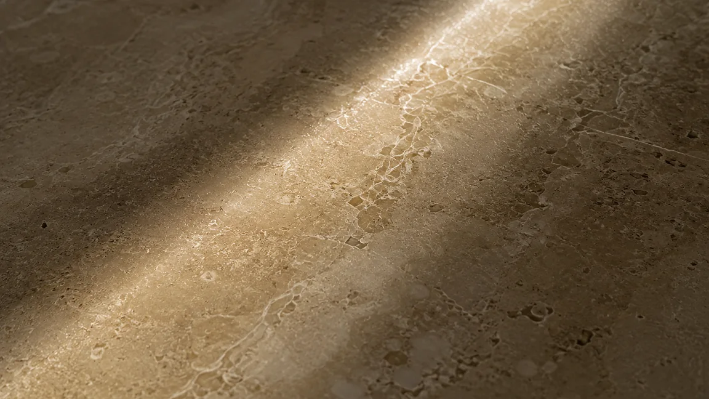
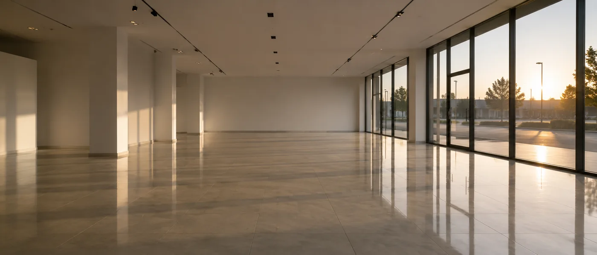
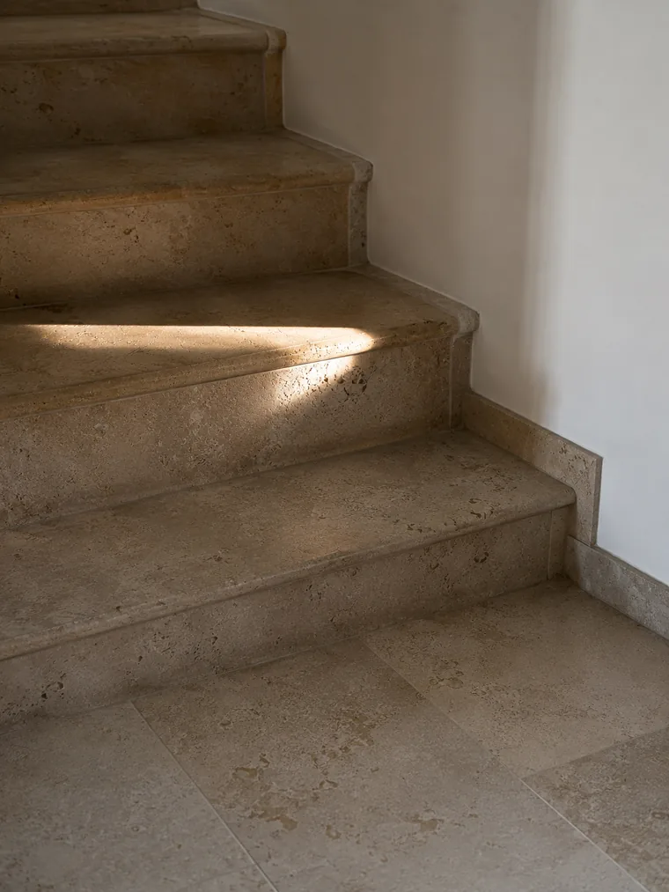
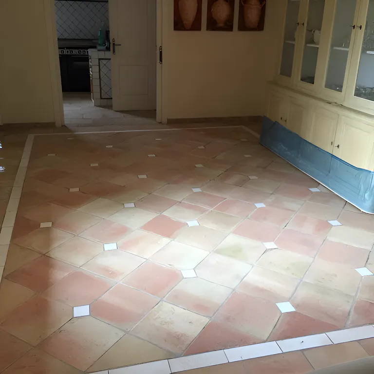
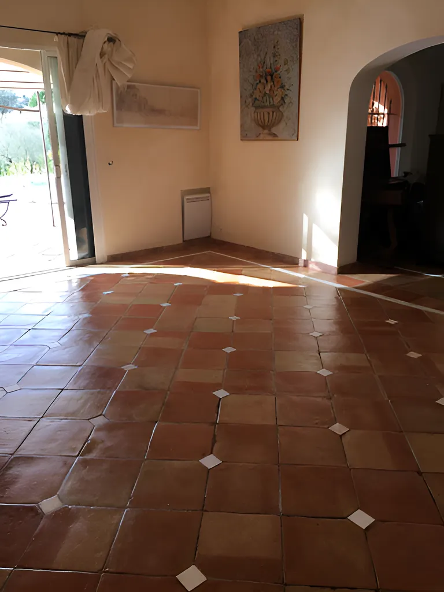
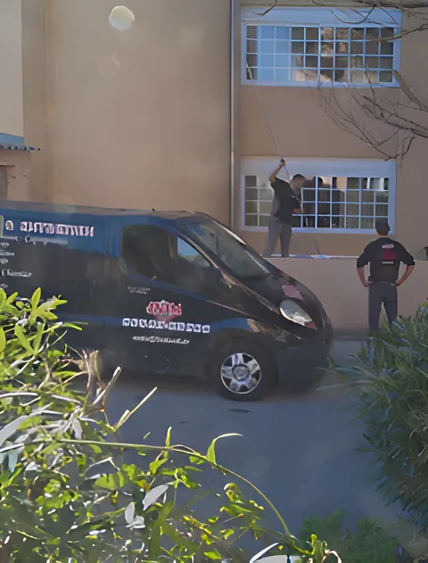
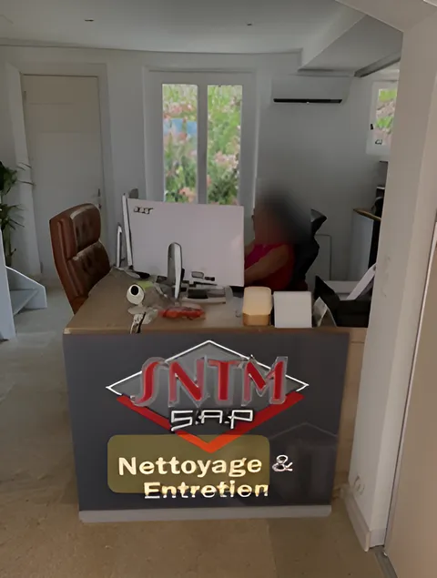
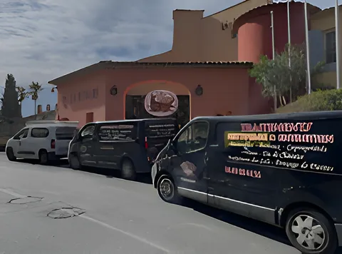
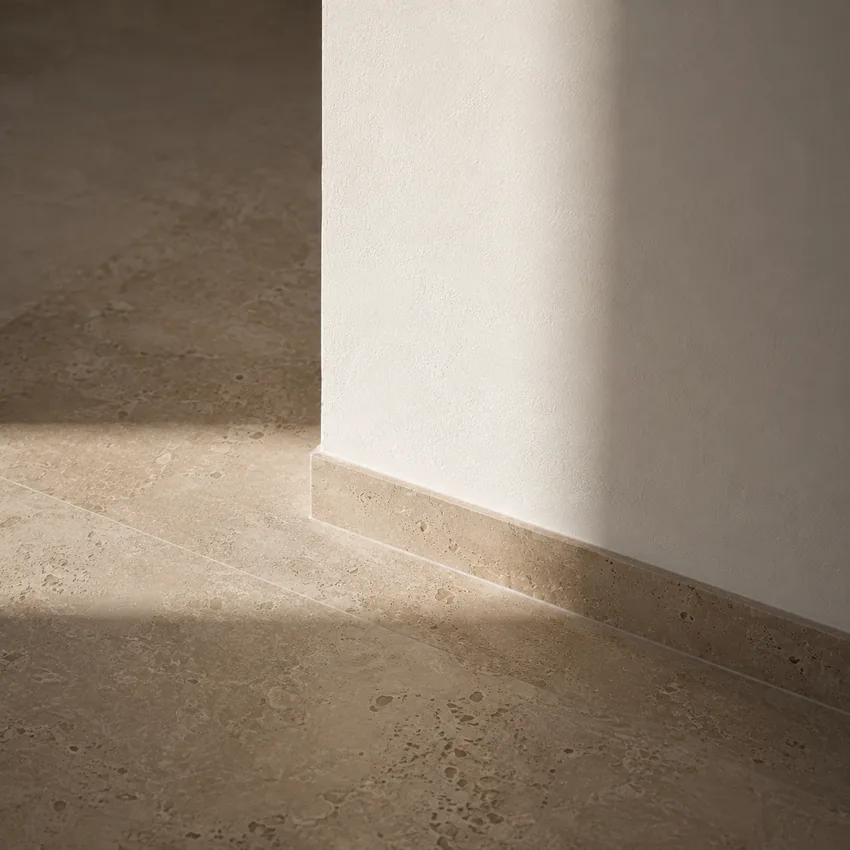

SNTM The standard of clean Professional cleaning · Maintenance · Floor treatment · Saint-Tropez
They trust us with their floors
Luxury hotels, villas, shops and schools across the Gulf.
The Byblos, Saint-Tropez’s palace hotel since 1967, is one of SNTM SAP’s clients.
The company
SNTM SAP has been caring for surfaces across Saint-Tropez and the Gulf since 2010. Hotels, villas, shops, schools, sites awaiting handover: every floor has its own method.
A floor is the most heavily used surface in a building, and the first one seen from the front door. It takes the footfall, the water, the sand and the wrong products. It degrades slowly, then all at once.
Our job is to step in before that moment, and to know what to do once it has passed. Every material calls for a different method, and that difference is the whole trade.
The year SNTM SAP was founded, in Gassin, at the heart of the Gulf.
Towns covered across the Gulf of Saint-Tropez, and the rest of the Var on request.
Families of floors we treat, from marble to porcelain stoneware, each with its own method.

Services
Four services, one standard
Retail and commercial premises
Sales floors, stockrooms and common areas, around your opening hours.
Schools and colleges
Classrooms, corridors and washrooms, with the constraints specific to schools.
Post-construction cleaning
Dust, residue, floors and glazing before handover or inventory check.
Floor treatment
Marble, travertine, terracotta, parquet, polished concrete, porcelain.
We step in before a floor deteriorates, not once it is beyond saving.
Working principle · SNTM SAPFloor treatment
Every material has its own method
Move your cursor over the floor: raking light reveals its true condition



Method
Diagnosis before treatment
- 01
Site visit
Identifying the material, its condition and how it has been maintained. This step decides the method, not the other way round.
- 02
Test patch
A trial on a small, out-of-sight area, to confirm the result before committing the whole floor.
- 03
The work
Carried out in the agreed slot, allowing for your business hours and the drying times of the material.
- 04
Upkeep
Guidance on products and frequency, or a regular visit if you would rather leave it to us.
A real job
Terracotta floors in a villa, during and after
No computer-generated images here: these are the photos the SNTM team took on site.
- Material
- Terracotta tiles with white inserts
- Location
- Private villa
- Condition found
- Floor dull and soiled, tone lost
- Work done
- Deep cleaning, then protection


On the ground
A Gulf company, with its own teams and premises

Our teams at work
Window cleaning and on-site maintenance, in SNTM uniform, with our own vans.

Our office in Gassin
A reception desk and a single contact, close to your sites.

Our fleet
Equipped vans to work anywhere in the Gulf.

Areas we cover
Saint-Tropez and the Gulf
- Saint-Tropez
- Ramatuelle
- Gassin
- Grimaud
- Cogolin
- Sainte-Maxime
- Cavalaire-sur-Mer
- La Croix-Valmer
We also work elsewhere in the Var, depending on the nature of the job.
A floor to restore, premises to maintain?
Tell us about the surface and its condition. We answer with a method, not a price per square metre.